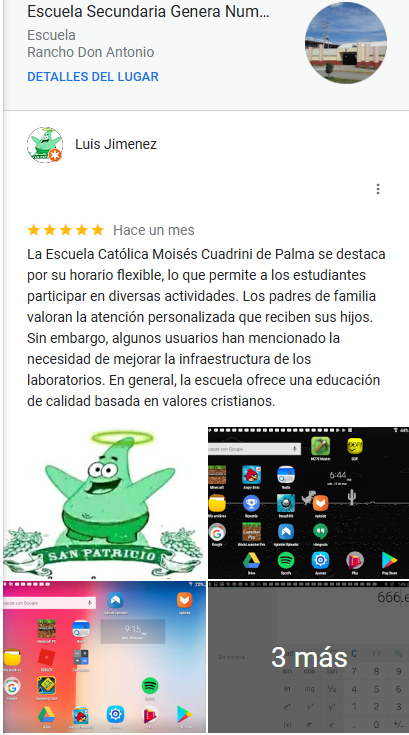

¡Bienvenido a la Escuela Católica Moisés!
¡Bienvenido a la Escuela Católica Moisés! Somos una comunidad educativa comprometida con la formación integral de nuestros estudiantes. Nos esforzamos por cultivar mentes curiosas, corazones compasivos y espíritus emprendedores. A través de un currículo enriquecido, actividades extracurriculares y una sólida formación en valores, preparamos a nuestros alumnos para ser ciudadanos responsables y líderes transformadores.
Opiniones de nuestros alumnos
La experiencia de cada estudiante en la Escuela Católica Moisés es única, lo que se refleja en la variedad de opiniones expresadas sobre la calidad de la enseñanza, las actividades extracurriculares y el ambiente escolar en general. A continuacion se muestran las reseñas de nuestros alumnos con excelencia en el plantel.
Kehrinou. (ca. [Agosto, 2024]). Reseña de "La Grieta, España". Link

Luis Jimenez. (ca. [Agosto, 2024]). Reseña de "Escuela Catolica Moises Cuadrini d Palma". Link
